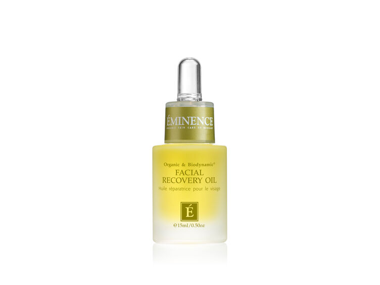
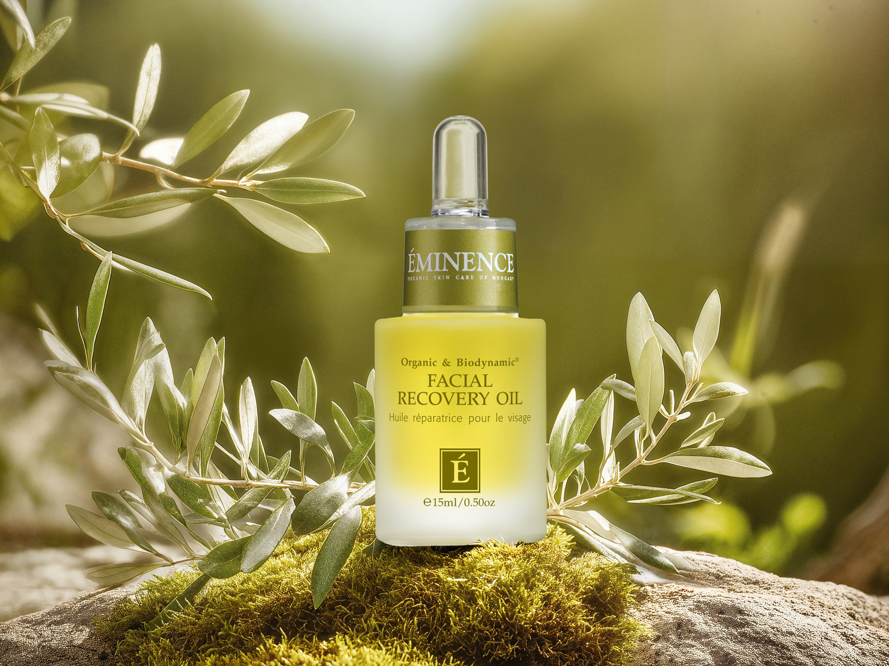
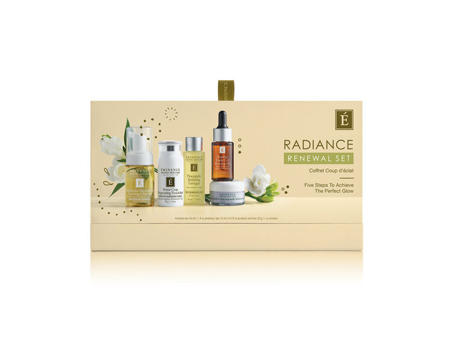
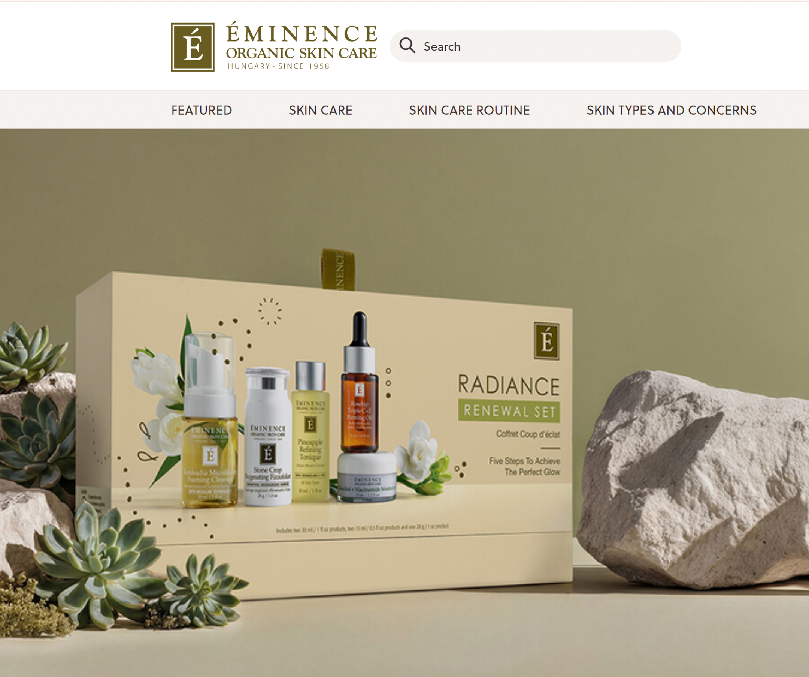

A typical campaign photography shoot for digital campaigns generally has a cost of roughly ~$7,000. This includes photography, post-production, coordination and asset preparation. Shorter campaigns and more demand for digital content made it necessary to quickly produce high-quality content. This needed to be done consistently across different campaigns and platforms while keeping costs low.
Most members of the creative team had backgrounds in print, packaging and traditional graphic design. Many were not familiar with generative AI tools or digital content production processes. As AI tools became more widely available, there was clear interest across the team. However, there was no shared language or structure to connect early experimentation with existing creative processes.
Individual designers had begun to experiment with generative AI concepts, but what the team really needed was an aligned process to turn those experiments into production-ready assets.
For AI to be useful within the creative process, the team needed a clear format for inputs, outputs and brand alignment.
At the same time, different stakeholders also had different needs.
To address this, I developed and delivered a three-session internal learning series, Snack & Learn: AI for Image and Video Generation.
The sessions were designed to guide the team from curiosity to capability, introducing the workflow required to produce usable campaign assets.
can build on existing assets and open up new possibilities for how the team approaches
creative production.
The goal was to demonstrate how generative AI can build on existing assets and open up new possibilities for how the team approaches creative production.
I also implemented content guardrails and prompt ownership. The guardrails made sure that the visuals AI produced always matched our brand guidelines. They also laid out for executives where they could, and where they could not, use AI.
- Backgrounds & environments
- Props and secondary elements
- Mood and lighting exploration
- Concept and moodboard generation
- Campaign visual testing
- Product efficacy claims
- Skin transformations or results
- Product textures
- Before/after visuals
- Realistic human results tied to products
Tool access guardrails clarified which shared accounts could be used, how prompts were logged, and who owned them, especially for assets entering paid media so there was full transparency from brief through to final asset.
Campaign visuals were produced internally by combining existing product assets with AI-generated environments, reducing the need for traditional full-scale photoshoots.
- Estimated savings per campaign: ~$4–5K compared to traditional production
- Estimated annual impact: ~60–70% reduction in visual production costs across campaigns
- Campaign timelines reduced from ~6 weeks to 3–4 weeks (33–50% faster delivery)
- External shoot dependency reduced by ~30%, shifting production toward internal AI-assisted workflows
Beyond strengthening internal capability with generative AI tools, the workflow also eased coordination and scheduling overhead.
The team now has a fully complete Evergreen 2026 AI visual system for marketing: master prompt, approved variants prompts and derivative asset architecture categorized per website, social, email and paid media. Each campaign will now produce 15–20 on-brand still images and 2 motion assets for web carousel all auto-generated using a documented repeatable process.
- A shared prompt system that helps the team create on-brand content without starting from scratch each time
- A prompt library that saves what we've learned so it can be reused
- A clear set of guidelines that shows where AI can be used and where it shouldn't




for the team.
The team shifted from curiosity and experimentation to a more structured use of AI, reframing the question from whether to use the tools to how they fit into everyday workflows.